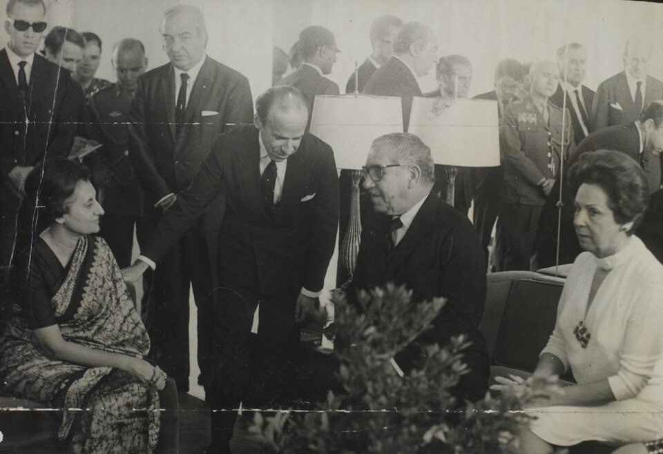

A42-POL-021 // HISTORICAL CLAIM REVIEW
The Assassination of Indira Gandhi
Assessment: The assassination by members of Gandhi's own security detail is established.

The precise allegation
Prime Minister Indira Gandhi was killed by two Sikh members of her security detail in October 1984, after the Indian Army's Operation Blue Star at the Golden Temple. The documented attack was a political assassination by her guards; unsupported versions describe a wider foreign-directed plot or claim that all security procedures were deliberately removed to enable it.
Chronology and political context
On October 31, 1984, Beant Singh and Satwant Singh shot Gandhi at her residence. The attack followed the June military operation against Sikh militants at Amritsar, which caused extensive deaths and damage to the sacred complex. Anti-Sikh pogroms began in Delhi after the assassination, killing thousands according to official and independent counts; failure to protect civilians became a separate, consequential political controversy.
Primary historical record
The prosecution record, contemporaneous reporting, Gandhi's security arrangements, and inquiry materials establish the shooters' identity and immediate circumstances. The Justice Thakkar Commission examined security lapses and possible conspiracy, while the trial convicted Satwant Singh and accomplices. Official findings are valuable but do not erase disputed testimony or the broader record of state failures during the violence that followed.
Corroboration and contrary evidence
The assassins' identities are corroborated by eyewitnesses, arrests, ballistics, and court proceedings. Historians connect motive to Operation Blue Star and the escalating conflict in Punjab. Claims that Pakistan or another foreign actor orchestrated the attack have not been supported by publicly verifiable command records, whereas state complicity in failing to prevent or stop anti-Sikh violence is extensively documented.
What remains uncertain
The full chain of motivation, the extent of advance knowledge among associates, and the reasons for particular security decisions remain contested. Some inquiry evidence was kept from public view or reported through summaries. Motive cannot be reduced to one operation alone; Sikh political grievances, state policies, and the attackers' own convictions formed a larger context.
Calibrated verdict
The assassination by members of Gandhi's own security detail is established. It was directly connected to the aftermath of Operation Blue Star, but public evidence does not establish an international sponsor. The post-assassination massacre and its failures of policing and accountability require separate scrutiny and must not be treated as an inevitable consequence of the assassination.
What evidence could change this assessment
Release of complete, authenticated commission files and security logs could clarify advance warnings and the government's response. Additional independently corroborated evidence of communications among the assassins and outside organizers would change the conspiracy assessment. A full archival account of the anti-Sikh violence could also revise understanding of institutional complicity after the killing.
Sources and source limits
- Encyclopaedia Britannica — Indira Gandhi assassinationSummarizes her life, Blue Star, and assassination; a tertiary biography rather than an inquiry record.
- India Today — Thakkar Commission and assassination recordsJournalistic reconstruction of inquiry findings and security questions; depends on documents and reporting rather than a newly opened case file.
- Encyclopaedia Britannica — Anti-Sikh riots of 1984Provides historical overview of the violence after the murder; concise summary, not a comprehensive accounting of individual responsibility.